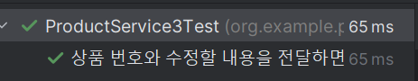
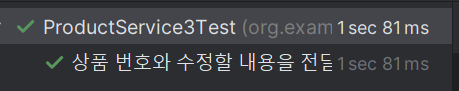

상품 수정 기능 구현하기.
- 테스트 작성시 알아야 하는 점
테스트 목적에 맞게 코드를 작성했다면, 코드는 크게 상관이 없습니다.
Mockito 사용하던, Stub을 직접 생성하던, InnerClass로 작성해도 됩니다.
RED
class ProductService3Test {
private ProductService3 productService;
private ProductPort productPort;
@BeforeEach
void setUp(){
productPort = new ProductPort() {
@Override
public Product getProduct(Long productId) {
return null;
}
@Override
public void save(Product product) {
//상품 저장
}
};
productService = new ProductService3(productPort);
}
@Test
@DisplayName("상품 번호와 수정할 내용을 전달하면 수정된 상품 정보가 반환된다.")
void update(){
//then
final Long productId = 1L;
final Product product = new Product("기존 이름", 1000, DiscountPolicy.NONE);
final String updateName = "수정된 이름";
final int updatePrice = 2000;
final UpdateProductRequestNew updateProductRequest = new UpdateProductRequestNew(updateName,updatePrice,DiscountPolicy.NONE);
//when
productService.updateProduct(productId,updateProductRequest);
//then
Assertions.assertThat(product.getName()).isEqualTo(updateName);
Assertions.assertThat(product.getPrice()).isEqualTo(updatePrice);
}
}
// 별도로 분리한 RequestDto
public record UpdateProductRequestNew(String updateName, int updatePrice, DiscountPolicy discountPolicy) {
public UpdateProductRequestNew {
Assert.hasText(updateName, "상품명은 필수입니다.");
Assert.isTrue(updatePrice > 0, "가격은 0원보다 커야합니다.");
Assert.notNull(discountPolicy, "할인정책은 필수입니다.");
//validation
}
}
Service 코드
public void updateProduct(final Long productId, final UpdateProductRequestNew updateProductRequest) {
throw new UnsupportedOperationException();
}
GREEN
코드 수정
public void updateProduct(final Long productId, final UpdateProductRequestNew updateProductRequest) {
final Product product = productPort.getProduct(productId);
product.update(updateProductRequest.updateName(), updateProductRequest.updatePrice(), updateProductRequest.discountPolicy());
productPort.save(product);
}
단위테스트 작성
product.update는 비즈니스 도메인 로직이기 때문에 검증을 해야합니다.
@Test
void updateTest(){
//수정은 비즈니스 로직이 포함될 수 있기 때문에 검증이 단위 테스트가 필수 입니다.
final String updateName = "변경된 상품명";
final int updatePrice = 2000;
final Product product = new Product( "상품명", 1000, DiscountPolicy.NONE);
//when
product.update(updateName, updatePrice, DiscountPolicy.NONE);
//then
Assertions.assertThat(product.getName()).isEqualTo(updateName);
Assertions.assertThat(product.getPrice()).isEqualTo(updatePrice);
}
@Test
@DisplayName("상품 수정시 상품명이 없으면 예외가 발생한다.")
void createProductTest(){
//given
final String name = "상품명";
final int price = 1000;
final DiscountPolicy discountPolicy = DiscountPolicy.NONE;
final Product product = new Product(name, price, discountPolicy);
final int updatePrice = 2000;
final String updateName = "";
//when //then
assertThrows(IllegalArgumentException.class, () -> product.update(updateName, updatePrice, discountPolicy));
}
다시 나머지 작성
productPort.getProduct()는 테스트에서 중요한 부분이 아닙니다. 테스트 코드에서 기존 데이터를 확인하고 그걸 그대로 반환하여 테스트가 깨지지만 않으면 됩니다.
Stubing 객체만들기
private static class StubProductPort implements ProductPort {
private Product product;
public StubProductPort(Product product) {
this.product = product;
}
@Override
public void save(final Product product) {
}
@Override
public Product getProduct(final Long productId) {
return product;
}
}
순수 Stub 적용
@Test
@DisplayName("상품 번호와 수정할 내용을 전달하면 수정된 상품 정보가 반환된다.")
void update(){
//then
final Long productId = 1L;
final Product product = new Product("기존 이름", 1000, DiscountPolicy.NONE);
final String updateName = "수정된 이름";
final int updatePrice = 2000;
final UpdateProductRequestNew updateProductRequest = new UpdateProductRequestNew(updateName, updatePrice, DiscountPolicy.NONE);
productPort = new StubProductPort(product);
productService = new ProductService3(productPort);
//when
productService.updateProduct(productId,updateProductRequest);
//then
Assertions.assertThat(product.getName()).isEqualTo(updateName);
Assertions.assertThat(product.getPrice()).isEqualTo(updatePrice);
}

Mockito 사용
@Test
@DisplayName("상품 번호와 수정할 내용을 전달하면 수정된 상품 정보가 반환된다.")
void update(){
//then
final Long productId = 1L;
final Product product = new Product("기존 이름", 1000, DiscountPolicy.NONE);
final String updateName = "수정된 이름";
final int updatePrice = 2000;
final UpdateProductRequestNew updateProductRequest = new UpdateProductRequestNew(updateName, updatePrice, DiscountPolicy.NONE);
productPort = Mockito.mock(ProductPort.class);
productService = new ProductService3(productPort);
given(productPort.getProduct(productId))
.willReturn(product);
//when
productService.updateProduct(productId,updateProductRequest);
//then
Assertions.assertThat(product.getName()).isEqualTo(updateName);
Assertions.assertThat(product.getPrice()).isEqualTo(updatePrice);
}

정리
Mockio 라이브러리를 사용하면 간편하게 빠르게 테스트 코드를 작성할 수 있습니다. 다만, 프레임워크를 사용하는 방법이다 보니 테스트 속도의 차이가 발생합니다.
현재 테스트 코드는 스프링 프레임워크 도움 없이 작성하는 방식입니다. POJO, SpringBootTest, ApiRest Test, Domain Test로 테스트 코드를 작성하지만,
테스트 코드도 유지보수를 해야하기 때문에 인수테스트를 중심으로 한다면 Domain Test와 ApiRest Test만 남기고 나머지는 유지보수를 위해 제거합니다.
그러면 POJO와 SpringBootTest는 작성할 필요가 없을거 같지만, POJO로 작성하면 데이터 접속 계층이 어떤 구현체가 와도 객체지향적으로 코드를 작성하기 때문에 JPA에 의존적이지 않은 코드를 작성하고, SpringbootTest를 통해 JPA가 제대로 동작하는지 확인합니다.
Last modified: 07 3월 2024